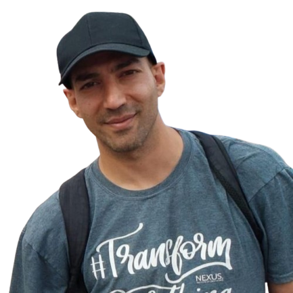

I am a bilingual Farsi/English professional based in Telford, Shropshire, with over 15 years of IT experience and a deep background in community support, interpretation, and volunteer leadership.
Since arriving in the UK in 2020, I have embedded myself in British society through church service, refugee support, and continuous learning — earning a Functional Skills Level 1 English qualification (City & Guilds, Ofqual regulated) in April 2026.
My character is vouched for by church trustees, a retired Local Authority Homeless Service Manager, an MBE-endorsed community director, and experienced senior pastors — all of whom have written detailed professional references on my behalf.
Available for interpretation, translation, community support roles, and IT positions across the UK. Right to Work confirmed.